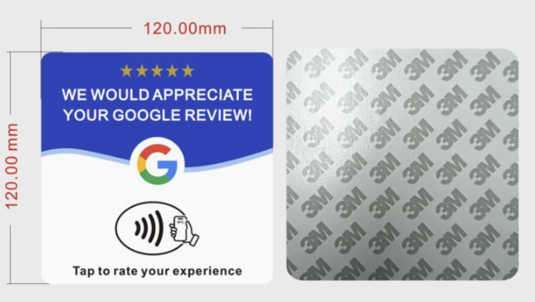
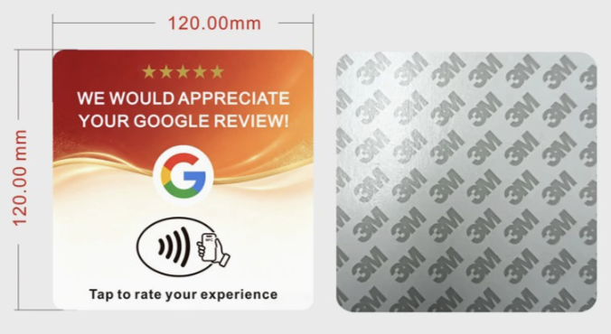

Quick answer: The safest way to source NFC review cards is to treat them as a printed electronics and display product, not just a cheap sticker. Confirm the NFC chip type, URL encoding method, QR code readability, acrylic thickness, printed artwork, adhesive backing, packaging, and random scan/tap tests before export. A local China sourcing agent can compare suppliers, check samples, document QC, and consolidate mixed display products for shipping.

Why NFC review cards are becoming a high-demand local business product
NFC review cards, QR code table tents and acrylic table stands solve a simple problem: customers often leave before writing a review or scanning a menu. A printed card placed on a counter, dining table, reception desk or checkout area creates a clear offline-to-online action. Buyers can customize the card with a review link, online menu, booking page, membership page or feedback form.
This category is attractive for wholesalers and e-commerce sellers because it combines low unit weight, low MOQ, custom printing, repeat business, and easy bundling with acrylic stands, PVC cards, stickers, packaging sleeves and display holders.
Main product types buyers can source
| Product type | Typical use | Key sourcing checks |
|---|---|---|
| NFC review card | Tap phone to open a Google Business Profile review link or feedback page | Chip type, read distance, encoded URL, print alignment, anti-scratch finish |
| QR code table tent | Restaurant menu, ordering page, booking page or review page | QR contrast, scan distance, acrylic clarity, base stability, waterproof surface |
| Acrylic table stand | Countertop display for salons, stores, clinics and hotels | Thickness, edge polish, scratch protection, color consistency, packing foam |
| PVC or metal review plate | Wall, door, checkout counter or reception desk | Adhesive strength, UV printing durability, rounded corners, mounting method |
| Custom review card kit | Retail resale bundle for local business clients | Logo card, thank-you insert, instruction card, barcode, carton marks |

Specification checklist before asking factories for price
For this product, the RFQ should be specific. Send the supplier the size, material, thickness, surface finish, printing method, NFC chip, encoded URL, QR code file, quantity, packaging and destination country. If you only ask for “NFC Google review card price,” suppliers may quote different materials and different chip quality, making the comparison unreliable.
- Common size: 120 mm x 120 mm square, but custom sizes are available.
- Common materials: PVC card, acrylic sheet, acrylic table stand, metal plate or adhesive sticker.
- Common chips: NTAG series or equivalent NFC chips, depending on phone compatibility and budget.
- Printing options: UV printing, laminated card printing, silk screen printing or sticker printing.
- Data setup: NFC URL encoding plus QR code print file verification.
- Packaging: single opp bag, kraft envelope, retail box, instruction card or bulk carton.
Quality control points for NFC and QR products
Acrylic and printed NFC products look simple, but small defects can make the final product unusable. A good QC plan should include visual inspection, function testing and packaging checks. The supplier should test NFC before packing, and the sourcing agent should re-test a random sample at warehouse receipt.
| QC item | What to inspect | Why it matters |
|---|---|---|
| NFC function | Tap with iPhone and Android phones, confirm URL opens correctly | A non-readable chip creates total product failure |
| QR code | Scan under normal light, angled light and table distance | Low contrast or blurred print hurts conversion |
| Artwork | Logo position, color, text, star icons, spelling and safe margins | Printing errors are expensive after mass production |
| Acrylic body | Scratches, chips, edge finish, warping and surface protection film | Display products must look clean on a customer-facing counter |
| Adhesive backing | 3M or requested adhesive type, coverage and peeling condition | Weak adhesive causes returns and poor installation |
| Packing | Individual protection, carton strength, SKU labels and carton marks | Acrylic surfaces scratch easily during shipping |
Best buyers for this product category
This category is suitable for promotional gift companies, restaurant supply distributors, local marketing agencies, Amazon sellers, Shopify sellers, salon equipment wholesalers, and print-on-demand packaging businesses. Small buyers can test ready-made styles, while larger buyers can customize card shape, color, brand message, packaging and instruction inserts.
For agencies selling to local businesses, the best bundle is often not a single card. A practical kit can include one NFC review card, one acrylic counter stand, one QR menu insert, adhesive backing, an instruction card and branded packaging. This makes the product easier to sell as a service package rather than a low-price commodity.
Trademark and compliance note
Many buyers describe this item as a “Google review card” because the card opens a public Google Business Profile review link. That wording is descriptive. The product should not be marketed as an official Google product, Google-authorized item or Google partner product unless the buyer has written authorization. Artwork using third-party logos should be reviewed by the buyer before printing.
How YiwuBridge can help source NFC review cards
YiwuBridge can compare suppliers for NFC cards, acrylic table stands, QR code menu signs, printed PVC cards and customized retail kits. We can collect samples, confirm chip and QR function, check printing quality, photograph defects, consolidate goods from multiple suppliers and coordinate export shipping.
Send us your reference image, size, target quantity, desired material, logo file, QR code or destination URL, packaging requirement and destination country. We will help turn the idea into a practical supplier quote and QC checklist.